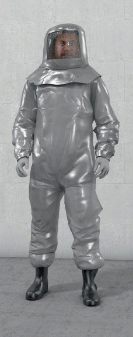

An Sendeanlagen ist es oftmals nicht möglich, die Sendeleistung zu reduzieren oder die Anlagen komplett abzuschalten.
Für diese Fälle wurden Schutzkleidungen für hochfrequente Felder entwickelt, die wie ein Faradey`scher Käfig wirken.
Sie bestehen aus einem Overall inklusive Handschuhe, Socken und einer Kopfbedeckung. Als dämpfendes Anzugmaterial wird beispielsweise ein Gewebe verwendet, in das Metallfäden eingewebt wurden. Das Gesichtsfeld wird durch ein Netz aus Draht geschützt.
Diese Anzüge müssen einer EG-Baumusterprüfung unterzogen worden sein, bei der die Schirmdämpfung im HF-Feld ermittelt wurde.
Beim Tragen eines Anzuges ist insbesondere wichtig, dass dieser komplett (mit Kopfbedeckung, Handschuhen und Socken) getragen wird. Alle Verbindungsstellen müssen sauber geschlossen sein.